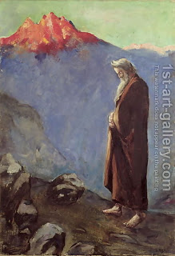

Bava Batra 119 - The Winning Argument of the Daughters of Tzelophchad

The daughters of Tzhelophchad petitioned that they should inherit their father's portion in the Land of Israel. Their argument ran as follows: if they were to be considered for inheritance, given that they had no brothers, well and good. However, if they are not considered for inheritance, they should likewise not be considered for yibum (levirate marriage) - and then their mother should be married to a brother of Tzelophchad, who would receive Tzelophchad's portion, thus bringing it back to the family.
Moses had to ask God, and their petitioned was granted. Moses would have written this part of the law anyway, but they were meritorious, and thus deserved that it was written through them - because of their love for the Land of Israel.
Art: Lesser Ury - Moses approaching Mt. Sinai-1905-07